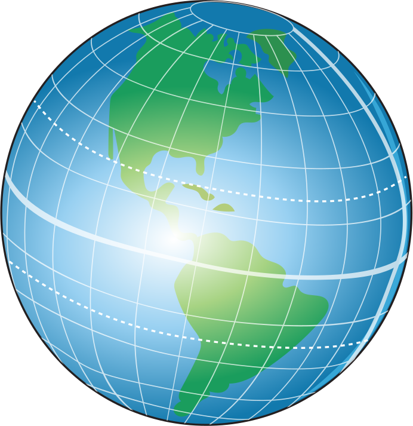

Relaciona las columnas escribiendo el número correspondiente. Consulta la página 18 de tu Atlas de geografía del mundo SEP.

Es la distancia que se mide en grados, minutos y se- gundos con respecto al ecuador.
Es la distancia vertical que se mide en metros desde cualquier punto de la Tierra con respecto al nivel del mar.
Es la distancia que se mide con respecto al meridiano de Greenwich, hacia el este u oeste.